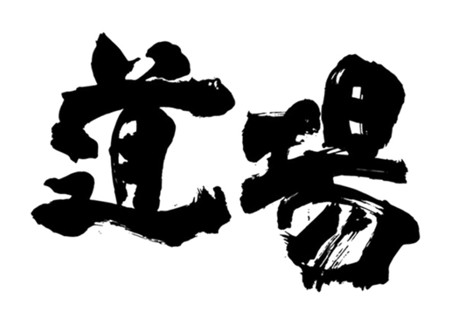

実践型1DAY / ケース面接×IR読み解き
コンサル道場 — 戦略思考を1日で叩き込む
KPMG・PwC代表取締役を歴任した椎名が、フェルミ推定や有価証券報告書の読み解きまでを1日で伴走。講演・演習・懇親会を通じて、現場で使える思考と手を動かす力を磨きます。

参加のポイント
Point 01
椎名茂の直講演
KPMG・PwC代表取締役を歴任した椎名が、リアルな事例を交えながらコンサルの思考術を伝授。
Point 02
フェルミ推定を体で覚える
ケース面接の肝となるフェルミ推定を演習形式で実施。構造化→仮説→計算の流れを一気に習得。
Point 03
有価証券報告書を武器に
業界分析・競合比較・企業課題の見立てをIR資料から読み解くワークで、情報の拾い方と解釈を学ぶ。
Point 04
懇親会で深掘り相談
講師に加え、元PwCパートナーや慶應スタートアップ創業メンバーも参加。キャリア・ビジネスの壁打ちOK。
プログラム
10:00
オープニング・アイスブレイク
1日の流れと狙いを共有し、ケース演習の前提を揃えます。
10:15
コンサルティング業界とは（椎名講演）
業界構造、プロジェクトの実際、求められる視座を解説。
11:30
フェルミ推定演習
問題分解と前提置きの型を学び、少人数で即実践。
13:30
有価証券報告書の読み方
業界分析・競合比較・企業分析・課題抽出をIR資料から行うワーク。
15:30
実践演習ワーク
ケース課題に取り組み、構造化・示唆出し・プレゼンまで通しで実践。
17:00
懇親会（1時間）
キャリア相談、プライベートの話、ビジネスアイデアの壁打ちなどフリートーク。
扱うテーマ
業界分析のフレーム
市場規模、成長ドライバー、収益構造、プレイヤー構図を整理する視点。
競合比較と差別化
IR・決算資料から強み/弱みを抽出し、勝ち筋を仮説化するプロセス。
課題設定から打ち手設計
課題の優先度付けと、インパクト×実現性での打ち手評価をワーク化。
講師・運営
SM
椎名 茂
KPMG、PwCで代表取締役を歴任。講演や演習を通じて、現場で求められる思考とアウトプットの精度を磨く実践型の指導を行います。
会場
参加申し込み